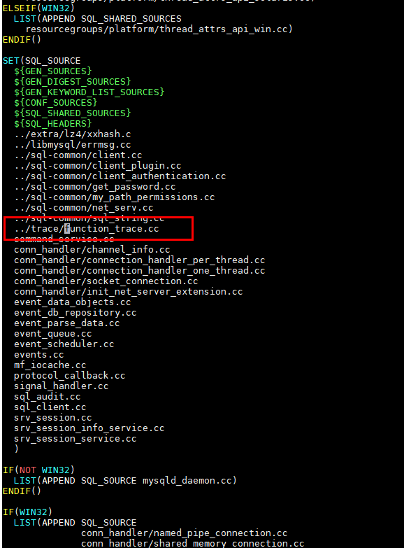

本节以为MySQL源码为例，描述为 /home/mysql-8.0.17/sql/sql_parse.cc文件中dispatch_command函数添加trace的操作步骤。

下文中描述的mysql源代码根目录为/home/mysql-8.0.17，相关操作请根据实际场景调整。
- 创建function-tp.h文件。
执行命令mkdir /home/mysql-8.0.17/trace, 在/home/mysql-8.0.17下面创建一个trace目录，在/home/mysql-8.0.17/trace下面创建文件function-tp.h。
#undef TRACEPOINT_PROVIDER #define TRACEPOINT_PROVIDER function_trace #undef TRACEPOINT_INCLUDE #define TRACEPOINT_INCLUDE "trace/function-tp.h" #if !defined(_FUNCTION_TP_H) || defined(TRACEPOINT_HEADER_MULTI_READ) #define _FUNCTION_TP_H #include <lttng/tracepoint.h> TRACEPOINT_EVENT( function_trace, function_enter, TP_ARGS( char *, function_name ), TP_FIELDS( ctf_string(funcname, function_name) ) ) TRACEPOINT_EVENT( function_trace, function_exit, TP_ARGS( char *, function_name ), TP_FIELDS( ctf_string(funcname, function_name) ) ) #endif #include <lttng/tracepoint-event.h> - 创建function-tp.c文件。
在相同目录 /home/mysql-8.0.17/trace 下创建源文件function-tp.c。
#define TRACEPOINT_CREATE_PROBES #define TRACEPOINT_DEFINE #include "function-tp.h"
- 编译动态库。
执行以下命令进行编译。
gcc -I/home/mysql-8.0.17 -fpic -c -o function-tp.o function-tp.c
gcc -Wl,--no-as-needed -o lttng-ust-function.so -shared -fpic function-tp.o -ldl -llttng-ust

执行完以上步骤就编译成功了一个提供tracepoint函数的动态链接库。
- 封装tracepoint函数，对外暴露更友好接口。
在/home/mysql-8.0.17/trace下创建function_trace.h
代码如下：
#ifndef _FUNCTIONTRACE_h_ #define _FUNCTIONTRACE_h_ #define FUNC_TRACE(funcname) \ FunctionTrace lttng_func_trace(funcname, funcname) class FunctionTrace { public: FunctionTrace(const char *category, const char *name); ~FunctionTrace(); private: const char *category_; const char *name_; }; #endif同时，在/home/mysql-8.0.17/trace下创建function_trace.cc的文件。
#include <sys/time.h> #define TRACEPOINT_DEFINE #define TRACEPOINT_PROBE_DYNAMIC_LINKAGE #include "trace/function-tp.h" #include "trace/function_trace.h" FunctionTrace::FunctionTrace(const char *category, const char *name) : category_(category), name_(name) { tracepoint(function_trace, function_enter, const_cast<char *>(name_)); } FunctionTrace::~FunctionTrace() { tracepoint(function_trace, function_exit, const_cast<char *>(name_)); } - 业务代码中加入需要打点信息，跟踪业务逻辑。
打开MySQL源码的sql目录下的sql_parse.cc，在代码最后一个#include后添加如下代码。
#include "trace/function_trace.h"

- 在sql_parse.cc中添加参数。
在sql_parse.cc中找到调用dispatch_command的地方，在函数开头添加FUNC_TRACE("dispatch_command")。

- 修改CMakeLists.txt文件。
在/home/mysql-8.0.17/sql中打开CMakeLists.txt, 添加function_trace.cc到如下图所示的位置，让该源文件参与mysql编译。

在如下图所示的位置，添加dl动态库到sql_main中。

- 初始化MySQL。
重新编译MySQL，安装部署后，执行必要的初始化命令后，使用如下命令启动LD_PRELOAD=”/home/mysql-8.0.17/trace/lttng-ust-function.so” mysqld --defaults-file=/etc/my.cnf 。
- 检测trace事件是否生效。
lttng create hellotest1
lttng enable-event -u function_trace:*
lttng add-context --userspace --type vtid --type vpid
lttng start
用mysql –h 127.0.0.1 –uroot –pxxx进入mysql client，执行一些sql语句。
lttng stop
lttng destroy
执行babeltrace /root/lttng-traces/hellotest1-20210505-104018,如果出现如下的回显就表示已经OK。

- 在/etc/sudoers.d/malluma_sudoers文件的末尾增加lttng和babeltrace的免密执行权限。
echo 'malluma ALL=(root) NOPASSWD:/usr/local/bin/lttng' >> /etc/sudoers.d/malluma_sudoers
echo 'malluma ALL=(root) NOPASSWD:/usr/bin/babeltrace' >> /etc/sudoers.d/malluma_sudoers